LINKS
General Apps
-
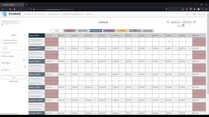
Booked Scheduler
Booked Scheduler is a scheduling application that allows users to book resources like rooms, and more, making it ideal for managing reservations and appointments.
-
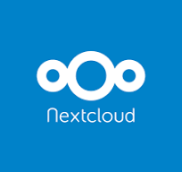
Nextcloud is a platform for cloud storage and collaboration, providing secure file sharing, synchronization, and online collaboration tools.
-
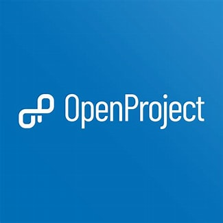
Open Project is a project management software enabling seamless team collaboration and task management. With features like agile boards, time tracking, and collaborative document editing, OpenProject enhances productivity and transparency in project workflows.
-
Hedgedoc
Hedgedoc is an open-source, web-based, self-hosted, collaborative markdown editor.
-
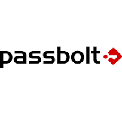
Passbolt
Passbolt is an Open Source password manager for teams. It allows your team to securely share and store credentials.
-
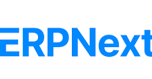
ErpNext
ERPNext is a full-featured business management solution that helps SMEs to record all their business transactions in a single system.

Simulation Apps
-
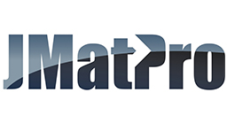
JMatPro
JMatPro is a materials modeling software that enables users to predict and analyze the thermophysical and mechanical properties of materials under different conditions, aiding in material selection, design optimization, and process improvement.
-
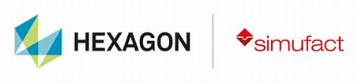
Simufact
Simufact Additive is a simulation software for metal additive manufacturing processes. It helps predict and mitigate issues like distortion, residual stresses, and supports optimization, ensuring high-quality 3D printed parts. Simufact Forming is a robust simulation tool for the metal forming industry. It covers a wide range of processes such as forging, rolling, and sheet metal forming, enabling the optimization of production processes and material utilization. Simufact Welding specializes in the simulation of welding processes, including arc welding, laser welding, and resistance welding. It assists in predicting thermal behavior, distortions, and residual stresses, improving welding quality and efficiency.
-
Micress
Micress, also known as MICRostructure Evolution Simulation Software, is a specialized computational tool used in materials science and metallurgy research. It enables researchers to simulate the microstructural evolution of metals and alloys during various thermal and mechanical processes such as solidification, phase transformation, and heat treatment.
-
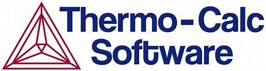
Thermocalc
Thermo-Calc is a powerful software package widely used in materials science and engineering. It provides comprehensive tools for thermodynamic calculations and phase diagram modeling. With Thermo-Calc, users can predict and analyze phase equilibria, phase transformations, and material properties under different temperature, pressure, and composition conditions. It's utilized in various industries, including metallurgy, ceramics, and materials research, to optimize processes, design new materials, and understand complex phase behaviors.
-
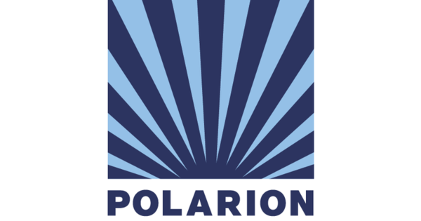
Polarion
Polarion is a comprehensive application lifecycle management (ALM) solution designed to streamline and enhance the development process of complex software and hardware projects. It offers a range of features including requirements management, project planning, task tracking, version control, quality assurance, and reporting. With its collaborative platform, Polarion enables teams to work together efficiently, ensuring traceability, compliance, and improved productivity throughout the entire project lifecycle.
-
NX CAD
NX CAD is a powerful Computer-Aided Design (CAD) software developed by Siemens. It offers comprehensive tools for 3D modeling, drafting, and product development. NX CAD provides advanced parametric modeling capabilities, allowing designers to create complex geometries and assemblies with precision and efficiency. The software supports various modeling techniques, including solid modeling, surface modeling, and synchronous modeling, enabling users to design diverse range of products across industries. NX CAD also offers integrated simulation and analysis tools, helping designers validate and optimize their designs before prototyping and manufacturing.
-
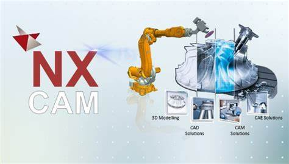
NX CAM
NX CAM is a leading Computer-Aided Manufacturing (CAM) software solution developed by Siemens. It offers advanced capabilities for generating toolpaths and controlling CNC (Computer Numerical Control) machines. With NX CAM, users can efficiently program complex machining operations, including milling, turning, and multi-axis machining. The software provides a wide range of machining strategies, simulation tools, and post-processing capabilities to optimize manufacturing processes and improve productivity. It integrates seamlessly with CAD systems, enabling smooth transition from design to manufacturing.
-
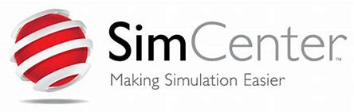
Simcenter
Simcenter, developed by Siemens, is a robust simulation and testing software platform. It covers various simulation disciplines like finite element analysis (FEA), computational fluid dynamics (CFD), and multi-body dynamics (MBD). Simcenter assists in optimizing product performance, reliability, and durability, enhancing engineering productivity through simulation data management and collaboration capabilities.
-
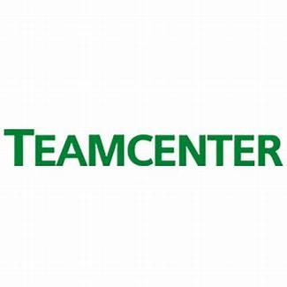
Teamcenter
Teamcenter, another Siemens solution, is a Product Lifecycle Management (PLM) software. It acts as a centralized hub for managing product-related data, processes, and collaboration across the product lifecycle. Teamcenter facilitates requirements management, design, manufacturing, change management, and workflow automation, ensuring data integrity and traceability.
-
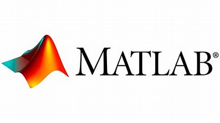
MATLAB
MATLAB, is a programming language and environment. Widely used in academia, research, and industry, MATLAB offers extensive tools for numerical computing, data analysis, algorithm development, and simulation. Its user-friendly interface and vast library of functions make it suitable for various applications, from mathematical modeling to engineering analysis.
Other Apps
-
Grafana
Grafana is an open-source analytics and monitoring platform designed for visualizing time-series data. It allows users to create customizable dashboards with graphs, charts, and alerts, making it suitable for monitoring systems, applications, and infrastructure performance.
-
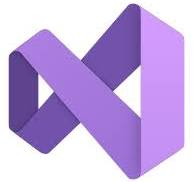
Visual-studio
Visual Studio is an integrated development environment (IDE) developed by Microsoft. It provides a comprehensive set of tools for software development, including code editing, debugging, and version control. Visual Studio supports various programming languages such as C#, C++, and Python, and it offers extensive customization options through extensions.
-

Draw i.o
draw.io is a web-based diagramming tool that allows users to create flowcharts, diagrams, wireframes, and other visual representations. It offers a wide range of shapes, icons, and templates, making it versatile for various diagramming needs. draw.io is known for its user-friendly interface and collaborative features, allowing multiple users to work on diagrams simultaneously.
-
.png)
Gitlab
GitLab is an efficient and comprehensive platform for managing code repositories. With GitLab, teams can securely store and version control their codebase, collaborate on projects, track issues, manage merge requests, and automate CI/CD pipelines.
-

Snipe IT
Snipe-IT is an open-source IT asset management platform designed for streamlined tracking and administration of hardware and software resources. With features including asset tracking, user management, and robust reporting capabilities, Snipe-IT simplifies IT asset management, enhancing efficiency and organization within your business.
Tech Stack
-
Container Plattform
- Docker - Open Source Docker is an open-source containerization platform that allows developers to package, distribute, and run applications as lightweight, portable containers. These containers encapsulate everything an application needs to run, including code, runtime, system tools, and libraries, ensuring consistency across different environments.
- Kubernetes - Open Source Kubernetes, often abbreviated as K8s, is an open-source container orchestration tool that automates the deployment, scaling, and management of containerized applications.
-
Datenbank SQL – MSSQL
-
MSSQL: is a widely-used relational database management system (RDBMS) developed by Microsoft. It provides a robust and scalable platform for storing, managing, and retrieving data. It enables efficient data management, high performance, and reliable data integrity. It serves as a server-side database system.
AZURE DATA STUDIO: is a client tool that can be used to interact with MSSQL and perform various tasks such as querying, database administration, and development. Download link: Azure Data Studio
-
-
Datenbank NOSQL
MongoDB - is a NoSQL database that offers high performance, scalability, and flexibility for handling unstructured or semi-structured data. It uses a document-oriented model, storing data in flexible JSON-like documents, which allows for easier integration with applications. MongoDB's distributed architecture and dynamic schema make it suitable for a wide range of use cases, from mobile apps to large-scale enterprise applications.
-
Passwort-Manager
KeePass and Passbolt -- are both robust password managers designed to securely store and manage your passwords. They use encryption to safeguard your data and offer features like password generation and autofill to enhance security and convenience. With KeePass, you manage your database locally, while Passbolt emphasizes collaboration and sharing among teams with its open-source platform.
-
Keycloak
Keycloak is an identity and access management tool used for Single Sign-On (SSO). It enables users to log in once and access multiple applications securely, supporting various authentication methods like social logins and multi-factor authentication.
-
System-Modellierungs-System
Eclipse Papyrus
https://www.eclipse.org/papyrus/Papyrus is a graphical editing tool for UML 2 and SysML 1.1 and 1.4 as defined by the Object Management Group (OMG).
All UML 2 diagram representations for UML 2 are supported. It is also possible to create your own domain-specific modeling languages.